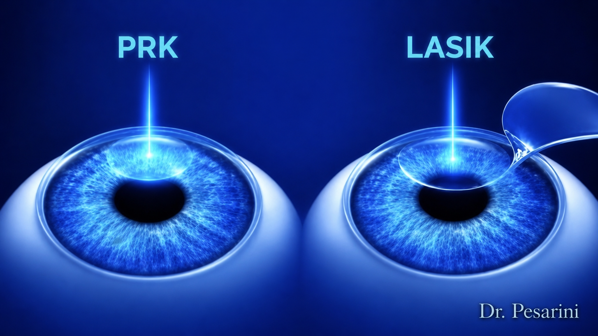
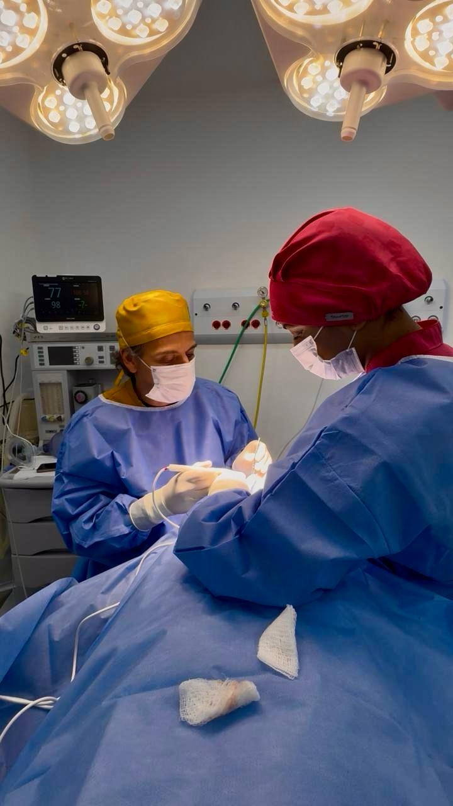

Procedimentos e Tratamentos
Da cirurgia de catarata à estética periocular, cada procedimento é pensado de forma individualizada para oferecer o melhor resultado com segurança e naturalidade.

Cirurgia
Cirurgia de Catarata
Procedimento ambulatorial, rápido e indolor. Substituição do cristalino por lente artificial via microincisão de 2,4mm sem pontos.
- ✅ Sem restrições alimentares
- ✅ Sem repouso absoluto
- ✅ Uso de telas liberado
Opção de lentes que corrigem o grau para múltiplas distâncias.

Cirurgia
Cirurgia Refrativa
Correção de grau com tecnologia laser ou implante de lentes para independência dos óculos.
- • PRK: Regeneração epitelial natural.
- • LASIK: Flap com laser de femtosegundo.
- • Lentes Fácicas: Para graus elevados.
Processo rápido sob anestesia tópica (colírios).

Estética
Cirurgias Palpebrais
Rejuvenescer o olhar sem perder sua essência através da blefaroplastia e técnicas avançadas.
- • Blefaroplastia Superior e Inferior
- • Remoção de Bolsas de Gordura
- • Resurfacing com Laser de CO₂
Resultados naturais respeitando a anatomia individual.